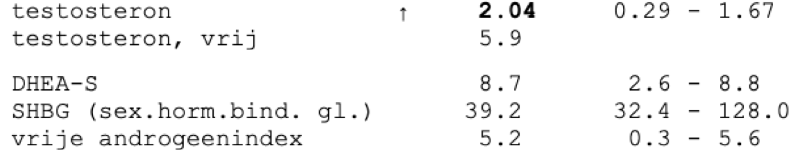

Hormoondisbalans en PCOS
Wat PCOS is, welke signalen erbij horen, en waarom één hoge waarde nog geen PCOS is.
Mijn klachten kwamen elke cyclus terug, dus ik dacht lang dat het hormonaal was. In mei 2026 stond er een pijltje bij mijn testosteron: 2,04, boven het bereik van het lab. In september was het 0,74, weer normaal. Eén hoge waarde betekent dus nog geen PCOS. PCOS komt wel veel voor: ongeveer 1 op de 8 vrouwen heeft het, en sinds mei 2026 heet het PMOS. Hier lees je wat het is, welke signalen erbij horen en wat je kunt laten meten. Of je het hebt, kan alleen een arts beoordelen.
Wat bijna niemand weet
PMOS
PCOS kreeg in mei 2026 een nieuwe naam
De nieuwe naam is polyendocrien metabool ovariumsyndroom. Polyendocrien betekent dat meerdere hormoonsystemen meedoen. Metabool betekent dat ook je stofwisseling meedoet: hoe je lichaam suiker en vet verwerkt. Het woord 'cysten' is eruit, want de blaasjes op de echo zijn geen cysten. Ruim 14.000 mensen met PCOS en zorgverleners dachten mee via vragenlijsten. De overstap duurt even, dus je arts zegt misschien nog PCOS.
Wereldwijd akkoord, The Lancet 2026
2 van 3
Voor PCOS heb je 2 van de 3 kenmerken nodig
De drie kenmerken zijn een onregelmatige cyclus, te veel androgenen (hormonen zoals testosteron) en veel kleine follikels op de echo of een hoge AMH, een hormoon dat die follikels maken. Een arts sluit eerst andere oorzaken uit. Heb je een onregelmatige cyclus én te veel androgenen, dan is een echo volgens de richtlijn niet eens nodig.
Internationale richtlijn 2023
43%
Bijna de helft van de vrouwen met PCOS heeft acne
In 60 studies had 43% van de vrouwen met PCOS acne, tegen 21% van de vrouwen zonder. Androgenen laten je talgklieren meer talg maken, het olieachtige laagje op je huid. Toch noemt de richtlijn acne alleen een vrij zwak signaal voor te veel androgenen in je bloed. Veel haargroei op plekken als je kin of buik zegt meer.
60 studies, 240.213 vrouwen met PCOS
75%
Insulineresistentie is vaak, ook als je slank bent
Insulineresistentie betekent dat je cellen minder goed reageren op insuline, het hormoon dat suiker uit je bloed je cellen in helpt. In een kleine studie had 75% van de slanke vrouwen met PCOS het, gemeten met de nauwkeurigste test: een clamp, waarbij je via een infuus insuline en suiker krijgt. Toch raadt de richtlijn nuchtere insuline en HOMA-IR af als standaardtest, omdat die in de praktijk weinig bruikbaar zijn. HOMA-IR is een rekensom uit je nuchtere insuline en glucose. Voor je bloedsuiker noemt de richtlijn een glucosebelastingtest (OGTT) het nauwkeurigst: je drinkt suikerwater en daarna wordt je bloedsuiker gemeten.
Studie met 40 vrouwen met PCOS, en de richtlijn
2,04 → 0,74
Mijn testosteron was in mei te hoog, in september niet meer
In mei 2026 was mijn testosteron 2,04 nmol/L, boven het bereik van het lab (0,29 tot 1,67). In september was het 0,74. Mijn SHBG, het eiwit dat testosteron in je bloed vasthoudt, ging van 39,2 naar 55,6. Eén uitslag is één moment: je testosteron schuift zelfs mee met je cyclus. Mijn hele uitslag zie je in deel 3.
Mijn eigen data
Polyendocrine metabolic ovarian syndrome, the new name for polycystic ovary syndrome: a multistep global consensus process.
Teede HJ, Khomami MB, Morman R, Laven JSE, Joham AE et al.
Lancet 2026 · PMID 42119588
Recommendations From the 2023 International Evidence-based Guideline for the Assessment and Management of Polycystic Ovary Syndrome.
Teede HJ, Tay CT, Laven JJE, Dokras A, Moran LJ et al.
J Clin Endocrinol Metab 2023 · PMID 37580314 · PMCID PMC10505534
Prevalence of acne vulgaris among women with polycystic ovary syndrome: a systemic review and meta-analysis.
Ramezani Tehrani F, Behboudi-Gandevani S, Bidhendi Yarandi R, Saei Ghare Naz M, Carmina E
Gynecol Endocrinol 2021 · PMID 33355023
Women with polycystic ovary syndrome have intrinsic insulin resistance on euglycaemic-hyperinsulaemic clamp.
Stepto NK, Cassar S, Joham AE, Hutchison SK, Harrison CL et al.
Hum Reprod 2013 · PMID 23315061
Reexamination of testosterone, dihydrotestosterone, estradiol and estrone levels across the menstrual cycle and in postmenopausal women measured by liquid chromatography-tandem mass spectrometry.
Rothman MS, Carlson NE, Xu M, Wang C, Swerdloff R et al.
Steroids 2011 · PMID 21070796 · PMCID PMC3005029
Deel 1
Wat is PCOS eigenlijk?
Hoe je hormonen en insuline elkaar opjagen
PCOS is een hormonale én metabole aandoening: het gaat over je hormonen en over hoe je lichaam suiker en vet verwerkt. Je hypofyse, een klier onder je hersenen, maakt LH en FSH. FSH laat follikels groeien, kleine blaasjes in je eierstokken met elk een eicel erin. LH laat je eierstokken hormonen maken, waaronder testosteron. Insuline, een hormoon uit je alvleesklier, helpt suiker uit je bloed je cellen in. Bij insulineresistentie reageren je cellen minder goed op insuline, dus maakt je alvleesklier er meer van.
- Je hersenen geven het LH-signaal vaker af, terwijl FSH achterblijft.
- Veel LH en veel insuline zetten je eierstokken aan tot meer testosteron.
- Veel insuline remt de aanmaak van SHBG in je lever. SHBG is het eiwit dat testosteron in je bloed vasthoudt. Met minder SHBG blijft er meer vrij, actief testosteron over.
- Meer testosteron maakt je hersenen minder gevoelig voor progesteron, het hormoon dat het LH-signaal normaal afremt. Zo blijft LH hoog en houdt de cirkel zichzelf in stand.
Tik op een onderdeel voor uitleg.
Vereenvoudigd schema, gebaseerd op de studies hieronder.
Het werkt ook andersom: bij PCOS dragen androgenen bij aan insulineresistentie. De richtlijn adviseert bij PCOS ook je bloedsuiker en bloedvetten te laten meten, wat je gewicht ook is.
Neuroendocrine dysfunction in polycystic ovary syndrome.
Burt Solorzano CM, Beller JP, Abshire MY, Collins JS, McCartney CR et al.
Steroids 2012 · PMID 22172593 · PMCID PMC3453528
Insulin resistance and the polycystic ovary syndrome revisited: an update on mechanisms and implications.
Diamanti-Kandarakis E, Dunaif A
Endocr Rev 2012 · PMID 23065822 · PMCID PMC5393155
A direct effect of hyperinsulinemia on serum sex hormone-binding globulin levels in obese women with the polycystic ovary syndrome.
Nestler JE, Powers LP, Matt DW, Steingold KA, Plymate SR et al.
J Clin Endocrinol Metab 1991 · PMID 1898744
Women with polycystic ovary syndrome have intrinsic insulin resistance on euglycaemic-hyperinsulaemic clamp.
Stepto NK, Cassar S, Joham AE, Hutchison SK, Harrison CL et al.
Hum Reprod 2013 · PMID 23315061
Recommendations From the 2023 International Evidence-based Guideline for the Assessment and Management of Polycystic Ovary Syndrome.
Teede HJ, Tay CT, Laven JJE, Dokras A, Moran LJ et al.
J Clin Endocrinol Metab 2023 · PMID 37580314 · PMCID PMC10505534
Deel 2
Hoe weet je of het PCOS is?
Twee van de drie kenmerken
Normaal groeit er elke cyclus één follikel uit tot hij openspringt en een eicel loslaat: je eisprong. Bij PCOS blijven veel follikels klein. Op een echo lijken ze op blaasjes, en daarom zat 'cysten' in de oude naam. Het zijn geen cysten. Volgens de internationale richtlijn van 2023 heb je PCOS als je 2 van deze 3 kenmerken hebt, en een arts andere oorzaken heeft uitgesloten.
- Een onregelmatige cyclus. Bij volwassenen is dat een cyclus die vaak korter is dan 21 of langer dan 35 dagen, of minder dan 8 menstruaties per jaar. Je eisprong kan ook uitblijven bij een regelmatige cyclus; dat zie je aan een laag progesteron.
- Te veel androgenen: hormonen zoals testosteron, die vaak 'mannelijk' heten maar die vrouwen ook maken. Je ziet het aan hirsutisme (veel haargroei op plekken als kin, borst of buik), aan acne of dunner wordend haar, of in je bloed.
- Veel kleine follikels op de echo: 20 of meer in één eierstok. Of een hoge AMH, het hormoon dat die kleine follikels maken. AMH telt alleen bij volwassenen, en nooit als enige test.
Andere oorzaken die je arts eerst uitsluit zijn onder meer je schildklier, een te hoog prolactine (een hormoon uit je hypofyse) en je bijnieren.
Recommendations From the 2023 International Evidence-based Guideline for the Assessment and Management of Polycystic Ovary Syndrome.
Teede HJ, Tay CT, Laven JJE, Dokras A, Moran LJ et al.
J Clin Endocrinol Metab 2023 · PMID 37580314 · PMCID PMC10505534
Polyendocrine metabolic ovarian syndrome, the new name for polycystic ovary syndrome: a multistep global consensus process.
Teede HJ, Khomami MB, Morman R, Laven JSE, Joham AE et al.
Lancet 2026 · PMID 42119588
Herken je deze signalen?
Kies per vraag nee, weet ik niet of ja. De vragen gaan over de signalen die de richtlijn noemt. Gebruik je hormonale anticonceptie, denk dan aan de tijd voordat je ermee begon.
Je cyclus is vaak korter dan 21 of langer dan 35 dagen.
Je hebt minder dan 8 menstruaties per jaar, of je menstruatie bleef weleens maanden weg zonder dat je zwanger was.
Een arts zag op een echo veel kleine 'cysten' of blaasjes op je eierstokken.
Je hebt meer haargroei dan je wilt op plekken als je kin, bovenlip, borst of buik.
Je hebt acne, ook nu je volwassen bent.
Je haar wordt dunner, vooral bovenop je hoofd of langs je scheiding.
Je komt makkelijk aan, vooral rond je buik.
Diabetes type 2 komt voor bij je ouders, broers of zussen.
Je herkent weinig van deze signalen. Meten laat zien of dat klopt.
Tik per vraag op een antwoord. Je antwoorden worden nergens opgeslagen.
Deze check stelt niets vast. Hij laat alleen zien welke signalen je herkent. Of je PCOS (PMOS) hebt, kan alleen een arts beoordelen. Herken je meerdere signalen, of blijft je menstruatie weg? Ga dan naar je huisarts.
Recommendations From the 2023 International Evidence-based Guideline for the Assessment and Management of Polycystic Ovary Syndrome.
Teede HJ, Tay CT, Laven JJE, Dokras A, Moran LJ et al.
J Clin Endocrinol Metab 2023 · PMID 37580314 · PMCID PMC10505534
Deel 3
Wat als één waarde te hoog is?
Mijn testosteron: hoog in mei, normaal in september
Ik liet jarenlang alles testen: mijn bloed, mijn DNA, mijn hormonen en mijn darm, ook bij klinieken in Amerika. Het kostte meer dan €10.000, en niemand kon mij helpen. In mei 2026 stond er een pijltje bij mijn testosteron.
- Mei 2026: testosteron 2,04 nmol/L, boven het bereik van 0,29 tot 1,67. Mijn SHBG, het eiwit dat testosteron in je bloed vasthoudt, was 39,2: binnen het bereik, maar aan de lage kant.
- Mijn FAI was 5,2, net binnen het bereik. De FAI (vrije androgeenindex) is je testosteron gedeeld door je SHBG, keer 100. Mijn DHEA-S, een androgeen uit je bijnieren, zat met 8,7 net onder de bovengrens van 8,8.
- September 2026: testosteron 0,74, weer binnen het bereik, en SHBG 55,6.

Mijn bloeduitslag van mei 2026. Het pijltje staat bij testosteron: 2,04, boven het bereik van 0,29 tot 1,67.
Te veel androgenen is maar één van de drie kenmerken, en één uitslag is één moment. Je testosteron schuift mee met je cyclus: bij 31 gezonde vrouwen was het rond de eisprong het hoogst en bleef het daarna hoger. Met de pil is de uitslag onbetrouwbaar, en de bereiken verschillen sterk per lab. Wat mijn klachten precies geeft, weet ik nog steeds niet. Het gaat op en af. Bespreek een afwijkende waarde altijd met je huisarts, ook of opnieuw meten zinvol is.
Reexamination of testosterone, dihydrotestosterone, estradiol and estrone levels across the menstrual cycle and in postmenopausal women measured by liquid chromatography-tandem mass spectrometry.
Rothman MS, Carlson NE, Xu M, Wang C, Swerdloff R et al.
Steroids 2011 · PMID 21070796 · PMCID PMC3005029
Recommendations From the 2023 International Evidence-based Guideline for the Assessment and Management of Polycystic Ovary Syndrome.
Teede HJ, Tay CT, Laven JJE, Dokras A, Moran LJ et al.
J Clin Endocrinol Metab 2023 · PMID 37580314 · PMCID PMC10505534
Deel 4
Wat kun je laten meten?
Welke waarden bij PCOS vaak afwijken
Bij PCOS wijken vaak een paar van deze waarden af, zelden allemaal. Eén waarde zegt weinig zonder de rest, je klachten en je cyclus.
- Androgenen. Testosteron meet je als totaal en als vrij deel. De FAI is je testosteron gedeeld door je SHBG, keer 100. De richtlijn wil testosteron gemeten met LC-MS/MS, een nauwkeurige labmethode. DHEA-S komt vooral uit je bijnieren.
- Je cyclus. LH, FSH en AMH laten zien hoe je eierstokken worden aangestuurd. Progesteron maak je pas na een eisprong, dus een lage waarde ongeveer een week voor je menstruatie wijst erop dat die is uitgebleven.
- Je stofwisseling. Triglyceriden en HDL zijn vetten in je bloed, glucose is je bloedsuiker. Bij een OGTT drink je suikerwater en meet je hoe je bloedsuiker daarna verloopt.
- Uitsluiten. TSH (je schildklier), prolactine en 17-OH-progesteron (je bijnieren) laten zien of iets anders je klachten geeft. Ligt je testosteron ver boven het bereik, dan zoekt je arts ook naar andere oorzaken.
Totaal testosteron
Licht verhoogd. Het liefst gemeten met LC-MS/MS.
Vrij testosteron / FAI
Hoger, doordat SHBG laag is.
SHBG
Insuline remt de aanmaak.
Androsteendion en DHEA-S
Soms verhoogd. Vooral zinvol als testosteron normaal is.
LH
Vaak hoog, maar kan normaal zijn. Telt niet mee om PCOS vast te stellen.
FSH
Normaal of laag-normaal. Dient om een vroege overgang uit te sluiten.
AMH
Hoog door veel kleine follikels. Alleen bij volwassenen.
Progesteron (tweede helft cyclus)
Rond dag 21 bij een cyclus van 28 dagen. Laag wijst op een uitgebleven eisprong.
Triglyceriden
Gemiddeld hoger.
HDL
Gemiddeld lager.
Glucose
Hoger risico, ook als je slank bent. Het liefst getest met een glucosebelastingtest (OGTT).
Nuchtere insuline / HOMA-IR
Vaak hoog, maar de richtlijn raadt het niet aan als standaardtest.
TSH, prolactine en 17-OH-progesteron
Om schildklier, prolactine en bijnier als oorzaak uit te sluiten.
Bespreek een afwijkende waarde altijd met je huisarts.
Let op. De pil maakt hormoonwaarden onbetrouwbaar. Wil je testen terwijl je hem gebruikt, overleg dan met je arts: de richtlijn noemt minstens 3 maanden zonder pil voordat je androgenen betrouwbaar meet.
Recommendations From the 2023 International Evidence-based Guideline for the Assessment and Management of Polycystic Ovary Syndrome.
Teede HJ, Tay CT, Laven JJE, Dokras A, Moran LJ et al.
J Clin Endocrinol Metab 2023 · PMID 37580314 · PMCID PMC10505534
Lipid levels in polycystic ovary syndrome: systematic review and meta-analysis.
Wild RA, Rizzo M, Clifton S, Carmina E
Fertil Steril 2011 · PMID 21247558
Deel 5
Eerst supplementen proberen?
Myo-inositol, berberine en monnikspeper
Veel vrouwen met PCOS proberen eerst een supplement. Myo-inositol is een stof die je lichaam zelf maakt en die ook in voeding zit. Berberine is een bittere stof uit planten zoals de zuurbes. Monnikspeper (vitex) is een extract van de bessen van een struik. Ook een supplement kan bijwerkingen geven en botsen met je medicijnen.
Berberine
Remt leverenzymen die medicijnen afbreken, waardoor medicijnen sterker kunnen werken. Niet bij zwangerschap of borstvoeding.
Monnikspeper (vitex)
Kan prolactine beïnvloeden en zo een te hoge waarde verbergen, terwijl je die juist wilt uitsluiten. Verstoorde in een casus een ivf-behandeling.
Myo-inositol
Weinig bijwerkingen, maar het bewijs is beperkt en onzeker.
De internationale richtlijn ziet weinig bewijs. Inositol 'kan worden overwogen', met beperkte voordelen, en bij een kinderwens noemt de richtlijn het experimenteel. Een bepaalde vorm of hoeveelheid kan de richtlijn niet aanraden. Gebruik je inositol of een ander supplement, vertel het dan je arts.
Start nooit zonder data. Het verkeerde supplement kan je klachten erger maken: door bijwerkingen, door een wisselwerking met je medicijnen, of omdat het niet past bij wat er bij jou speelt. Laat daarom eerst je waarden meten, en kies daarna samen met een arts.
Recommendations From the 2023 International Evidence-based Guideline for the Assessment and Management of Polycystic Ovary Syndrome.
Teede HJ, Tay CT, Laven JJE, Dokras A, Moran LJ et al.
J Clin Endocrinol Metab 2023 · PMID 37580314 · PMCID PMC10505534
Inositol for Polycystic Ovary Syndrome: A Systematic Review and Meta-analysis to Inform the 2023 Update of the International Evidence-based PCOS Guidelines.
Fitz V, Graca S, Mahalingaiah S, Liu J, Lai L et al.
J Clin Endocrinol Metab 2024 · PMID 38163998 · PMCID PMC11099481
Repeated administration of berberine inhibits cytochromes P450 in humans.
Guo Y, Chen Y, Tan ZR, Klaassen CD, Zhou HH
Eur J Clin Pharmacol 2012 · PMID 21870106 · PMCID PMC4898966
Vitex agnus castus effects on hyperprolactinaemia.
Puglia LT, Lowry J, Tamagno G
Front Endocrinol (Lausanne) 2023 · PMID 38075075 · PMCID PMC10702745
Multiple follicular development associated with herbal medicine.
Cahill DJ, Fox R, Wardle PG, Harlow CR
Hum Reprod 1994 · PMID 7989506
Weet je welke waarden afwijken, en op welk moment in je cyclus je ze hebt gemeten, dan kun je samen met je arts kiezen wat zinvol is. Bij een volgende meting zie je dan ook of het werkt.
De trial
Begin met je eigen data
-
01
Aanmelden. Klik op de knop en laat je gegevens achter.
-
02
Koppelen. Koppel je wearable, of krijg 30 dagen gratis een WHOOP.
-
03
Analyse. We lezen 30+ waarden uit, zoals je slaap, HRV en herstel, en sturen je protocol per video.
-
04
Opvolging. In een call bespreken we wat je data laten zien en wat je volgende stap is.


Vertrouwd door 400+ mensen
Wordt privé afgehandeld door ons team.
Wat members zeggen
Leontine BorsatoInfluencer, tv-presentatrice en celebrity“Ik voel me heel goed! Het eten is wel wat lastig met zoveel reisjes, maar alles op z'n tijd.”
 JayJay BoskeOndernemer, spreker en influencer
JayJay BoskeOndernemer, spreker en influencer“Als ik het niet zie, is het er voor mij niet.”
 Rob LipsettCreator en ondernemer
Rob LipsettCreator en ondernemer“This is super thorough, love it.”
 Ruud & RenéeCEO en medeoprichter, Thrivin
Ruud & RenéeCEO en medeoprichter, Thrivin“Heb echt gekke energie, hele dagen door. Echt super.”
Daniel DalenCEO en oprichter, Ecomflow“Haha, je bent echt een beast, bro.”
Meer guides
Alle bronnen (13)
- Teede HJ et al., Lancet 2026
- Teede HJ et al., J Clin Endocrinol Metab 2023
- Ramezani Tehrani F et al., Gynecol Endocrinol 2021
- Stepto NK et al., Hum Reprod 2013
- Rothman MS et al., Steroids 2011
- Burt Solorzano CM et al., Steroids 2012
- Diamanti-Kandarakis E et al., Endocr Rev 2012
- Nestler JE et al., J Clin Endocrinol Metab 1991
- Wild RA et al., Fertil Steril 2011
- Fitz V et al., J Clin Endocrinol Metab 2024
- Guo Y et al., Eur J Clin Pharmacol 2012
- Puglia LT et al., Front Endocrinol (Lausanne) 2023
- Cahill DJ et al., Hum Reprod 1994
Deze pagina is informatie, geen medisch advies.